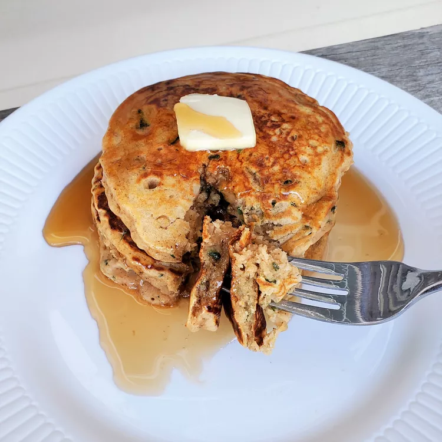

Zucchini Bread Pancakes
Back to index page.

I love zucchini, and it's always fun to find new ways to use it. I added my favorite zucchini
bread ingredients, cinnamon and vanilla, to a fluffy pancake recipe! If you like nuts in your quick
breads, you may try adding 1/4 cup of chopped walnuts or pecans to your batter.
Ingredients
- 1 tablespoon lemon juice
- 1 cup milk
- 1 ½ cups all-purpose flour
- 2 tablespoons white sugar
- 1 teaspoon ground cinnamon
- 1 teaspoon baking powder
- ½ teaspoon baking soda
- ½ teaspoon salt
- 1 large egg
- 2 tablespoons unsalted butter, melted
- 1 teaspoon vanilla extract
- 1 cup shredded zucchini
- nonstick cooking spray